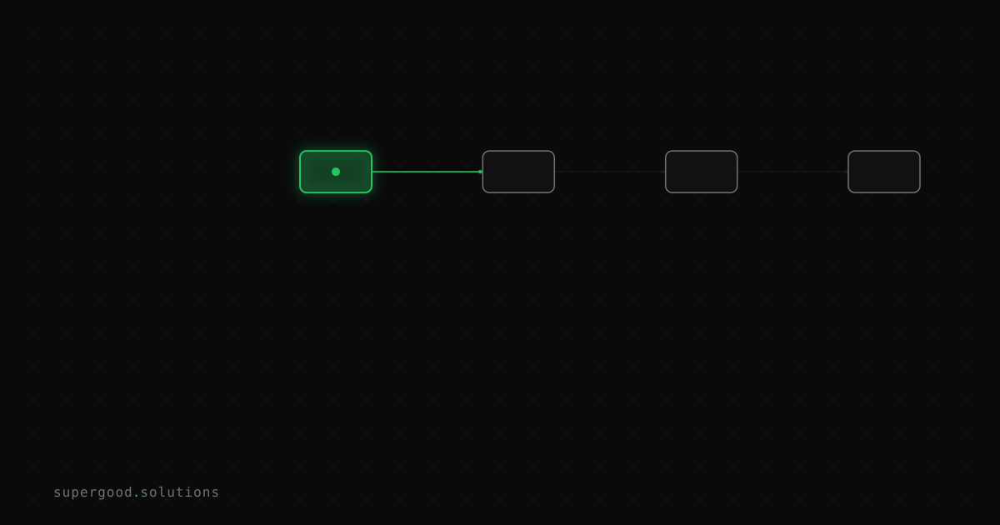

What On-Device AI Is, and What Your Product Does When the Wi-Fi Is Bad
TL;DR: On-device AI means the model runs on the laptop or phone in the user's hand, not in a data center. Most teams only think about that choice when security asks a question, but the more useful test is what your feature does when the connection is slow.
Key Insight
There are two places a model can run. In the cloud, your app sends text to a data center, a large model answers, and the reply travels back. On the device, a smaller model sits on the user's own hardware and answers without leaving the machine.
The usual way to compare them is quality. Cloud models are bigger, so they win, and device models are the budget option. That is true for hard reasoning. It is a poor guide for the thing users feel first, which is whether the feature responds at all.
A cloud call has a floor set by the network, and a ceiling set by the worst network your users ever sit on. A local model has neither problem. It answers at the same speed in a basement, on a plane, and in a warehouse with one bar of signal. Apple's design reflects this. Its Apple Intelligence stack uses a compact on-device model of roughly 3 billion parameters for everyday requests and a larger server model on Private Cloud Compute for heavier ones. Apple also opened the on-device model to developers through its Foundation Models framework, which tells you where it thinks the everyday work belongs.
The open-source side is moving the same way. Hugging Face's SmolLM3 is a fully open 3B model that the team reports beats Llama-3.2-3B and Qwen2.5-3B. Models that small and that capable are why "run it locally" stopped being a demo.
Why Teams Miss This
Teams test their AI assistants on office fiber, on a developer laptop, with a warm connection. In that setting a cloud call feels instant and the question of where the model runs never comes up.
Then the feature ships to people who do not work in your office. A field technician opens the assistant in a basement. A clinician uses it on a hospital network that blocks half the internet. A sales rep tries it in an airport. The model is fine. The request just never comes back, or comes back after fifteen seconds, and the user decides the AI does not work.
The privacy conversation has the same shape. Security asks whether customer text leaves the network and how long the vendor keeps it. The team answers with a policy document. A local model can answer with a fact: the text never left the device. Neither answer is always right, but teams that never considered the device option cannot offer the second one.
How to Actually Do It
Treat the network as a dependency that fails, and decide in advance what the feature does when it does.
- Test on the worst connection you support. Throttle your laptop to a slow mobile profile and use the feature for a day.
- Set a time limit for the cloud call. If no answer arrives in a few seconds, stop waiting.
- Pick a fallback for each task. Some tasks can drop to a small local model. Others can queue and finish later. A few should say plainly that they need a connection.
- Keep the local model narrow. Summarizing a note, cleaning up a sentence, and filling form fields are good jobs for a 3B model. Open-ended research is not.
- Log which path each request took, so you can see how often users hit the fallback.
You can feel the latency difference in a few minutes with a local runner:
# pull a small open model and time a local answer
ollama pull smollm3
time ollama run smollm3 "Rewrite this in one clear sentence: the thing is broken again"Then simulate the cloud path on a bad connection. The sketch below shows the shape of a timeout with a local fallback:
import requests
def answer(prompt):
try:
r = requests.post(CLOUD_URL, json={"prompt": prompt}, timeout=4)
r.raise_for_status()
return r.json()["text"], "cloud"
except (requests.Timeout, requests.ConnectionError):
return run_local_model(prompt), "on_device"The second return value is the log field from step 5. It is the cheapest way to learn how often your users are not on good Wi-Fi.
What We've Learned
On-device does not mean private by default. A model can run locally while the app still syncs prompts, logs them, or sends telemetry. If privacy is the reason you chose it, audit what the app does with the text, not only where the model runs.
It also does not replace the cloud. The enterprise setups that hold up tend to be hybrid, with the device taking the fast and sensitive work and the cloud taking the hard reasoning.
This week, throttle your network, use your own AI feature for one working day, and write down every moment it stalls. Pick the single most common stall and give it a local fallback. That one change will tell you more about your users than another round of model benchmarks.
Sources
- Apple Machine Learning Research, on-device and server foundation models: Updates to Apple's On-Device and Server Foundation Language Models
- Hugging Face, small open 3B model: SmolLM3: smol, multilingual, long-context reasoner
- Hugging Face, earlier small model family: SmolLM, blazingly fast and remarkably powerful
- Local inference runtime: llama.cpp on GitHub
- Local model runner: Ollama
Have a specific workflow in mind?
Bring it to a Quick Scan — a live working session where we'll tell you honestly whether it should be an agent, a workflow, or left alone, before you spend a dollar building it. You get 3 prioritized recommendations on the call, a one-page summary after, and the $500 credited toward any engagement within 30 days.
Get new posts + practical agent-ops notes
One email when something new goes up. No nurture sequence, no spam — unsubscribe whenever you want.